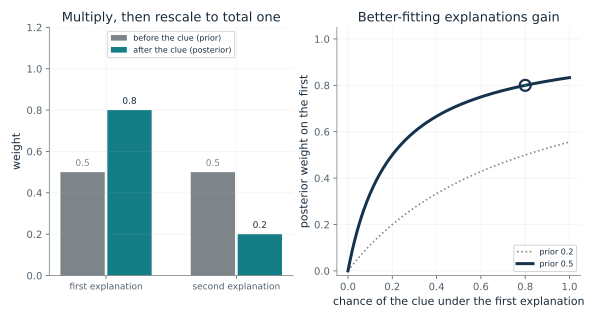
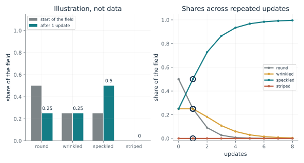
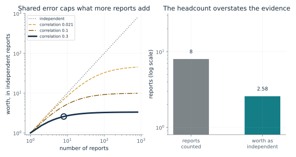
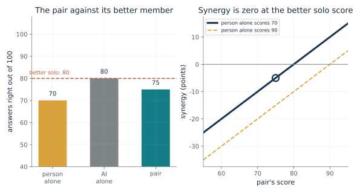
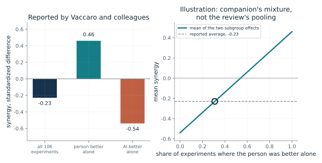
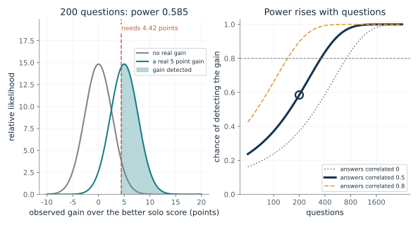

How does one clue reweight two explanations?
From Chapter 34, Multiply the evidence, then rescale
Two explanations start with weights. A clue fits one better. What happens when each weight is multiplied by its fit and the weights are rescaled to total one?
Each explanation's weight is multiplied by how probable the clue would be under it. The products no longer total one, so each is divided by their total. The result is the posterior. The odds change by exactly the ratio of the two likelihoods, so a clue four times as likely under the first explanation moves even odds to four to one.
Predict first: With both explanations starting at 0.5 and the clue 4 times as likely under the first, predict the new weights before looking.

Starting weight on the first explanation: 0.5 · Chance of the clue under the first explanation: 0.8
What happens: The products are 0.4 and 0.1, totaling 0.5, so the weights become 0.8 and 0.2, odds of 4 to 1, the clue's likelihood ratio. Set the prior to 0 and the first stays at 0 whatever the clue says.
Starting at 0.5 and 0.5, the products are 0.4 and 0.1, which total 0.5. After rescaling the weights are 0.8 and 0.2.
- Product, first explanation
- 0.4
- Product, second explanation
- 0.1
- Posterior, first
- 0.8
- Posterior odds, first to second
- 4
The same step recurs through the book. Its guarantees are exact: a zero weight stays zero, and a common positive factor cancels. Its weakness is also exact: wrong likelihoods or an omitted option give a confident wrong answer.
In Ernst and Banks's study four people judged bar height close to a reliability-weighted average of sight and touch. The match to multiply-and-rescale is the book's derivation, not the study's test, and the study recorded nothing from the brain.
Arora, Hazan and Kale surveyed a rule of this shape as multiplicative weights, repeatedly discovered in several fields. The survey says nothing about beliefs or attention, and nothing here describes any particular decoder.
Show the calculation
Products: 0.5 x 0.8 = 0.4 and 0.5 x 0.2 = 0.1. Total 0.5. Divide each by the total: 0.8 and 0.2.
The equations and symbols
- x_i
- option i's weight now (the prior), not below zero
- g_i
- its evidence number: how well it fits the clue (the likelihood), not below zero
- x_i'
- its weight after the update (the posterior)
- sum_j x_j g_j
- the total of the products, which rescales the weights; it must be positive
The options listed are the only options, the evidence numbers are right, and the same evidence is not counted twice. An option left off the list cannot be recovered by rescaling.
Check your understanding: The first explanation starts at 0.2 and the clue's chance is 0.5 under the first and 0.2 under the second. What are the new weights?
Book source: Chapter 34, Multiply the evidence, then rescale. Illustration C34-D01. Formula. Book formula, Bayes' rule for any number of options. The chapter's invented example is two explanations at 0.5 each and a clue of probability 0.8 under the first and 0.2 under the second. The other starting weights and clue chances are the companion's variations.
What does the same update do to a field of seeds?
From Chapter 34, Multiply the evidence, then rescale
Round, wrinkled, speckled and striped seeds leave 1, 2, 4 and 10 offspring per plant. What happens to their shares under repeated multiply-and-rescale?
Each update multiplies a type's share by its offspring and divides by the total, so speckled doubles from a quarter to a half while round halves. Repeating the update makes the most fertile present type take over. A striped share of exactly zero stays zero forever, but even a small positive start grows fastest.
Predict first: Striped seeds would do best, but the field holds none. Predict the striped share after one update and after eight, and whether a small starting share changes that.

Striped share at the start: 0.0 · Updates applied: 1
What happens: One update gives round 0.25, wrinkled 0.25, speckled 0.5 and striped 0, matching the chapter. Striped stays at zero however well it would have done. Switch the striped start to 0.05 and it passes every other type by the second update.
Each update multiplies a type's share by its offspring (1, 2, 4, 10) and divides by the total 2. After 1 update the speckled share is 0.5 and the striped share is 0, still zero because a zero share stays zero.
- Round share
- 0.25
- Wrinkled share
- 0.25
- Speckled share
- 0.5
- Striped share
- 0
This is the chapter's exact, carried-over fact: rescaling cannot add an answer the list omits. A person or a check on the list has to supply the missing option.
No brain is modeled here. The chapter says whether any brain computes this step is open, and a weight means a share of a population in one reading, a belief in another and a machine's trust in the third.
With losses 2.30, 1.61, 0.916 and 0 and a weight of exp(-loss), a machine's multiplicative weights give the same first-update shares as the ledger. That is a match of numbers chosen to match, not a claim about any system.
Show the calculation
Start 0.5, 0.25, 0.25, 0. Products 0.5, 0.5, 1, 0, total 2, first update 0.25, 0.25, 0.5, 0. The machine reading with losses 2.3, 1.61, 0.916, 0 and weight exp(-loss) gives 0.25, 0.25, 0.5, 0 on the first update.
The equations and symbols
- x_i
- type i's share of the field
- f_i
- the offspring each plant of type i leaves (a fitness, not below zero)
- x_i'
- its share after one update
Fixed offspring numbers, no mutation or migration, and shares that are shares of a population. The chapter notes that the same arithmetic also reads as a likelihood in inference and as a loss-based weight in a machine, with the numbers chosen to match.
Check your understanding: In the chapter's field, what are the products and the total before rescaling?
Book source: Chapter 34, Multiply the evidence, then rescale. Illustration C34-D02. Constructed example. The chapter's illustration with no real data: round 0.5 leaving 1, wrinkled 0.25 leaving 2, speckled 0.25 leaving 4, and striped, which would leave 10, absent from the field. One update gives 0.25, 0.25, 0.5 and 0. The small striped starts and repeated updates are the companion's extension, not in the chapter.
How many independent reports are eight related reports worth?
From Chapter 34, In an illustrative case, eight reports that share errors count as 2.6
If reports share errors, how much does a headcount overstate the evidence, and what caps what more reports can add?
The variance of the average of n reports with pairwise correlation rho is the single-report variance times (1 + (n - 1) rho) / n. An independent panel of size n_eff has variance divided by n_eff, so equating the two gives the formula. As n grows the average variance approaches rho times the single variance, and the worth approaches 1/rho.
Predict first: Predict the effective size of 787 reports at the chosen correlation 0.021, before changing the controls.

Number of reports: 8 · Error correlation between any two reports: 0.3
What happens: Eight reports at correlation 0.3 are worth 8/3.1, about 2.6 independent reports, and no number of such reports can exceed 10/3, about 3.3. Multiplying their likelihoods as if independent would count the evidence about 3.1 times over.
8 reports whose errors correlate at 0.3 are worth 2.58 independent ones, so treating them as independent counts the evidence 3.1 times over. As reports are added the worth approaches 3.33.
- Reports counted
- 8
- Worth in independent reports
- 2.58
- Ceiling as reports are added
- 3.33
- Overcount if treated as independent (times)
- 3.1
Multiply-and-rescale cannot tell whether two reports repeat the same source. Computing the effective size first says how much evidence the reports really carry.
People who saw one another's answers, as Chapter 23 reported, can share errors. The chapter says Galton does not claim his guessers did.
Language models trained on overlapping material can fail together. Chapter 23 reported measured overlap in wrong answers, and a second model adds information only if it offers evidence the first lacks.
Show the calculation
n_eff = n / (1 + (n - 1) rho) = 8 / (1 + 7 x 0.3) = 8 / 3.1 = 2.58. Ceiling 1/rho = 3.33.
The equations and symbols
- n
- the number of reports, each equally noisy
- rho
- the error correlation between any two reports, from 0 up to 1 here
- n_eff
- how many independent reports would give an average as steady
Equally noisy reports, one correlation shared by every pair, bell-shaped errors, and the same shift in every report. The formula describes variance, not shared bias: a very steady average can still be systematically wrong.
Check your understanding: Four reports have error correlation 0.2. What are they worth, and what is the most any number of such reports could be worth?
Book source: Chapter 34, In an illustrative case, eight reports that share errors count as 2.6. Illustration C34-D03. Formula. Book formula. Eight reports at correlation 0.3 give 2.6 and a ceiling of 10/3, the chapter's illustrative case. The 787 guesses at correlation 0.021 are Chapter 23's invention: the 787-to-45 ledger is not a finding that Galton's guessers shared errors.
Did the pair add anything beyond its better member?
From Chapter 34, Across 106 experiments, pairs on average trailed the better of the two alone
A person, an AI and the pair take the same task. How is the pair's score judged against the two working alone?
The max picks whichever member did better alone, and the pair is scored against that member. A pair that outscores the person but trails the AI has negative synergy. A faster answer or a lower cost can still matter, which is why the chapter says to count costs, but it does not make the pair a better scorer than its better member.
Predict first: With the person at 70 and the AI at 80, predict the pair's score at which synergy is zero, and whether a pair that beats the person is a pair that adds value.

Pair's score: 75 · Person alone: 70
What happens: The pair at 75 beats the person's 70 by 5 and falls 5 short of the AI's 80, so synergy is minus 5. Raise the person's score to 90 and the baseline switches to the person.
With the person at 70, the AI at 80 and the pair at 75, the better solo score is 80 and synergy is -5 points. The pair is compared with the better member, so beating the weaker one is not enough.
- Better solo score
- 80 (the AI)
- Pair's score
- 75
- Synergy (points)
- -5
- Reading
- the better member alone did better
A partnership claim needs the right comparison. Comparing the pair with the weaker partner, or with nothing, can make any pair look useful.
A person's solo score is what the person does without the machine. It depends on the task and the person, and these numbers are constructed.
An AI's solo score is the machine alone on the same task. Where a machine alone cannot do the task, the chapter says to compare against a relevant existing alternative instead.
Show the calculation
synergy = P_pair - max(P_H, P_A) = 75 - max(70, 80) = 75 - 80 = -5.
The equations and symbols
- P_pair
- the pair's score
- P_H, P_A
- the person's and the AI's scores alone, on the same task and scale
- max
- the larger of the two solo scores: the better-solo baseline
All three scores come from the same task on the same scale, higher is better. The review excluded tasks that either side cannot do alone, so a case where only the pair can act lies outside this yardstick; there, test a relevant existing alternative instead.
Check your understanding: The person scores 90, the AI 80 and the pair 85. What is the synergy, and which member is the baseline?
Book source: Chapter 34, Across 106 experiments, pairs on average trailed the better of the two alone. Illustration C34-D04. Formula. Book formula, a simple version of the standardized difference used by Vaccaro, Almaatouq and Malone. The scores 70 (person), 80 (AI) and 75 (pair) are the chapter's constructed example, giving synergy of minus 5; the person's other score, 90, is the companion's variation. Chapter 1's version of this example is the same arithmetic.
How can an average of minus 0.23 hide gains and losses?
From Chapter 34, Across 106 experiments, pairs on average trailed the better of the two alone
Across 106 experiments pairs trailed the better member by 0.23 on average, yet the pair gained when the person was better alone. How do those fit together?
A mean of two subgroup effects sits between them, closer to the larger subgroup. The reported overall effect is nearer the AI-better effect, which is what a mixture dominated by that kind of experiment would produce. The review's pooling is not this simple, so the share is illustrative.
Predict first: Predict whether the reported overall average of minus 0.23 lies closer to the person-better effect or to the AI-better effect.

Share of experiments where the person was better alone: 0.31
What happens: A share of about 0.31 gives 0.31 x 0.46 + 0.69 x (-0.54) = -0.23, matching the reported average. That is arithmetic, not a finding. The same overall number would also arise from many other splits if the effects differed.
If a share 0.31 of experiments had the person better alone (effect 0.46) and the rest the AI better alone (effect -0.54), a simple mean would be -0.23. A share of 0.31 would reproduce the reported -0.23, but the review pools effect sizes by meta-analysis, not by simple means.
- Mean at this share
- -0.23
- Reported average
- -0.23
- Share that would reproduce it
- 0.31
- Mean minus reported
- 0
A single average cannot say whether a pair helps. The authors do not think the result means combining people and AI is a bad idea, and the split shows why the answer depends on who is better alone.
The person-better case is where the pair gained over its better member. The review compared people, machines and pairs on the same tasks, and it measured no brain activity.
The AI-better case is where the pair lost to the machine alone. Whether a pair can be routed to the better member for each question is one of the features the chapter's proposed test would add.
Show the calculation
mean = share x 0.46 + (1 - share) x (-0.54) = 0.31 x 0.46 + 0.69 x (-0.54) = -0.23. Solving mean = -0.23 gives share = (-0.23 + 0.54) / (0.46 + 0.54) = 0.31.
The equations and symbols
- d_H
- the reported synergy when the person alone was better, 0.46
- d_A
- the reported synergy when the AI alone was better, minus 0.54
- q
- the share of experiments where the person was better alone (an assumption here; the chapter does not give it)
- d-bar
- the share-weighted mean of the two subgroup effects
The mixture treats the two subgroup effects as simple averages over all experiments. The review does not give a share of person-better experiments and does not pool this way, so the share that reproduces the reported average is only a way of seeing how an average of opposite effects can land near zero.
Check your understanding: If exactly half the experiments had the person better alone, what would the simple mean of the two subgroup effects be?
Book source: Chapter 34, Across 106 experiments, pairs on average trailed the better of the two alone. Illustration C34-D05. Reported result. The three numbers are those the chapter reports from Vaccaro, Almaatouq and Malone (2024): minus 0.23 overall, plus 0.46 when the person alone was better, minus 0.54 when the AI alone was better, on one standardized scale. The share-weighted mean is the companion's own arithmetic; the review's overall figure is a meta-analytic pooling of 370 effect sizes, not a simple mean.
How many questions could a proposed test need?
From Chapter 34, Across 106 experiments, pairs on average trailed the better of the two alone
The chapter sketches a test on 200 yes-or-no questions with a target gain of five points, and says 200 may be too few. Under what assumptions is it too few?
The observed gain has a standard error that shrinks with the square root of the number of questions and with the correlation between the two sets of answers. The test counts a gain when it exceeds about 1.645 standard errors. The chance of passing that bar, when a real 5 point gain exists, is the power.
Predict first: Predict whether 200 questions give at least an 80 percent chance of detecting a real 5 point gain when the pair's and the solo's answers are correlated at 0.5.

Questions in the test: 200 · Correlation of correctness between pair and solo: 0.5
What happens: At 200 questions and correlation 0.5 the chance is about 0.59, short of 0.8. It rises to about 0.90 if the answers correlate at 0.8, and falls to about 0.37 if they do not correlate. The conclusion depends on an assumption nobody has measured here.
With 200 questions and the pair's and the better solo's answers correlated at 0.5, a real 5 point gain is detected 58.5 percent of the time. About 358 questions would give 80 percent. These are illustrative constructed assumptions, not a result.
- Chance of detecting a 5 point gain
- 0.585
- Gain needed to count (points)
- 4.42
- Questions for 80 percent power
- 358
- Standard error of the gain (points)
- 2.69
A proposed test should be sized before it is run, and the size depends on stated assumptions. A design that cannot detect the target gain cannot settle the question.
A person's answers and a pair's answers on the same questions are likely to correlate, since the person is part of the pair. How strongly is an assumption here, not a measurement.
A machine's answers repeated in the pair create the same overlap. The test adds features one stage at a time, and separating their effects would need further comparisons.
Show the calculation
Per-question variance of the difference = 0.8 x 0.2 + 0.85 x 0.15 - 2 x 0.5 x sqrt(0.16 x 0.1275) = 0.145. se = sqrt(var/200) = 0.0269; power = 1 - Phi((1.645 se - 0.05)/se) = 0.585; questions for 80 percent = var x ((1.645 + 0.842)/0.05)^2 = 358.
The equations and symbols
- delta
- the gain the test should detect: 0.05, the chapter's illustrative target
- V
- the variance of one question's pair-minus-solo result; it shrinks as the two sets of answers correlate
- N
- the number of questions
- z_alpha, z_beta
- 1.645 for a one-sided 5 percent test and 0.842 for 80 percent power
- Phi
- the standard normal cumulative distribution
The same questions are given to the pair and to the better solo, correctness on each question is correlated at the chosen level, and a one-sided test at 5 percent is used. Real tests may differ in design and in what they count, and the chapter also asks to count time and wrong answers as costs.
Check your understanding: At correlation 0.8, about how many questions give 80 percent power, using the metric shown?
Book source: Chapter 34, Across 106 experiments, pairs on average trailed the better of the two alone. Illustration C34-D06. Constructed example. The 200 questions and five-point margin are the chapter's illustrations, which it says may be too few. The better solo accuracy of 0.80, the pair at 0.85, the answer correlations and the normal-approximation power calculation are the companion's own constructed assumptions, not a result and not from any study.
Mathematical illustrations use the book's formulas with disclosed small examples. Each interactive choice shows a result computed from the same calculations as the chapter notebook. A simulation is not a measurement, and for a brain the mathematics is a model: a picture illustrates a result, and the assumptions determine its scope. Review copy, brain-computer partnership revision of 1 november 2026.